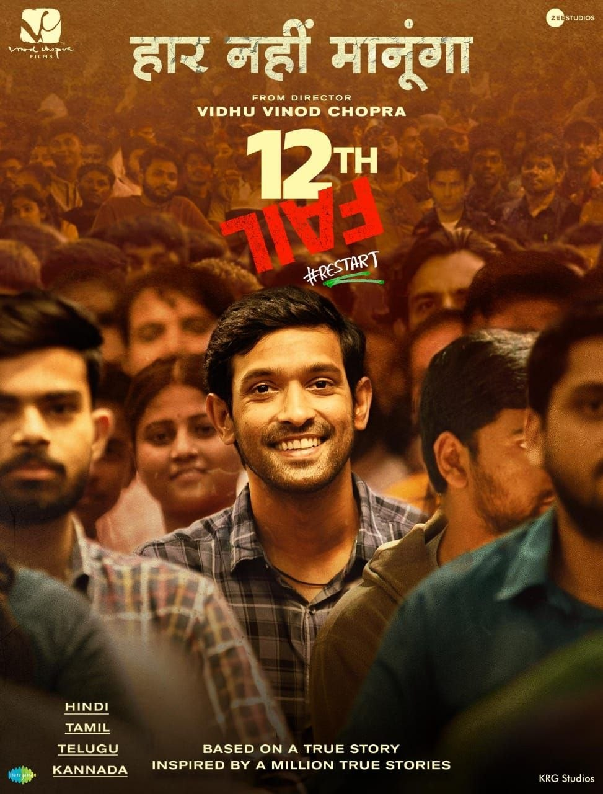

Director: വിധു വിനോദ് ചോപ്ര
Review by: ഷിജിൽ എം പി
വിധു വിനോദ് ചോപ്ര രചനയും സംവിധാനവും നിര്മ്മാണവും നിർവ്വഹിച്ച് 27-October-2023 ല് പുറത്തിറങ്ങിയ ഹിന്ദി ചിത്രമാണ് ‘12th Fail'. 29-December-2023 മുതൽ Hotstar ൽ ഈ ചിത്രം ലഭ്യമാണ്.
കൊള്ളക്കാര്ക്ക് പേരുകേട്ട ചമ്പല് താഴ്വരയിലെ ബില്ഗാവ് എന്ന ഗ്രാമത്തിലെ ഒരു സാധാരണ കുടുംബത്തിലെ, മനോജ് കുമാർ ശർമയെന്ന യുവാവിന്റെ കഥയാണ് ‘12ത് ഫെയില്‘. കോപ്പിയടിക്കാന് അധ്യാപകര് പോലും സഹായിക്കുന്നൊരു സ്കൂളില് പഠിച്ചിരുന്ന മനോജ്, കോപ്പിയടിക്കാന് പറ്റാത്തതിനാല് പ്ലസ്ടുവില് തോല്ക്കുന്നു. സത്യസന്ധനായ ഒരു പോലീസ് ഓഫീസറെ കാണുന്ന മനോജ്, അയാളെപ്പോലെയാവാന് തീരുമാനിക്കുന്നു. അതിനായി പ്ലസ് ടു പഠനത്തിന് ശേഷം ഗ്വാളിയറിലെത്തുന്ന അവന്, പ്രീതം പാണ്ഡെയെന്ന സുഹൃത്തിനൊപ്പം UPSC കോച്ചിങ്ങിന് ഡല്ഹിലെത്തുന്നു. അവിടെ നേരിടേണ്ടി വന്ന പ്രതിബന്ധങ്ങളെയും സാഹചര്യങ്ങളെയും, തന്റെ അപാരമായ നിശ്ചയദാര്ഢ്യവും കഠിനാധ്വാനവും ഒരുപറ്റം നല്ല മനുഷ്യരുടെ സ്നേഹവും കൊണ്ട്, മനോജ് മറികടക്കുന്നതാണ് ഈ ചിത്രത്തിന്റെ ഇതിവൃത്തം.
മനോജ് കുമാർ ശർമയുടെ യഥാർത്ഥ ജീവിതത്തെക്കുറിച്ചുള്ള, അനുരാഗ് പഥക്കിന്റെ ‘12ത് ഫെയില്‘ എന്ന പുസ്തകത്തിനെ അടിസ്ഥാനമാക്കിയുള്ള ഈ ചിത്രത്തില്, മനോജിനെ അവതരിപ്പിച്ച വിക്രാന്ത് മാസിയുടെ പ്രകടനം അത്യുജ്ജലമാണ്. കഥാസന്ദര്ഭങ്ങളാലും അഭിനേതാക്കളുടെ പ്രകടനത്താലും മികച്ചുനില്ക്കുന്ന ഈ ചിത്രം, ഏവര്ക്കും, പ്രത്യേകിച്ച് വിദ്യാര്ത്ഥികള്ക്ക് വലിയ പ്രചോദനമാകുമെന്നതില് ഒരു സംശയവുമില്ല. മത്സരപരീക്ഷകള്ക്ക് തയ്യാറെടുക്കുന്നവര് തീര്ച്ചയായും കണ്ടിരിക്കേണ്ട ചിത്രമാണിത്.